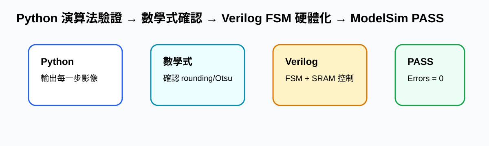

九、Lessons learned from this lab
本 Lab 最大的學習重點，是先用 Python 把每個影像處理流程的數學演算法寫清楚，並輸出每一階段的影像結果，再思考如何將同一套流程轉換成 Verilog 硬體設計。Python 負責快速驗證正確性，Verilog 則負責把演算法拆成可合成的 FSM、暫存器、記憶體讀寫與逐 pixel 掃描流程。
最後 ModelSim 結果顯示 P1～P4 全部 PASS，總錯誤數為 0，代表從 Python 演算法驗證到 Verilog RTL 實作的流程是可行且有效的。
一、整體學習流程

我學到不能一開始就直接寫 RTL，因為影像處理錯誤可能來自灰階、濾波、threshold、mask、CCL 或 bbox 任一階段。先用 Python 產生每個中間結果，可以讓 Verilog debug 有明確參考。
二、Python 驗證流程與影像輸出
| 流程 | 數學/演算法目的 | Python 輸出 | Verilog 對應 |
|---|---|---|---|
| RGB 讀圖 | 確認 256×256 row-major mapping | P4_input | Img_A = y×256+x |
| 灰階轉換 | RGB 轉單一 intensity | P4_gray | 整數乘法 + ties-to-even |
| Gaussian | 降低雜訊，使 threshold 穩定 | P4_gaussian | 3×3 kernel + Reflect 101 |
| Otsu | 從 histogram 找最佳 threshold | histogram/threshold | 掃描 0~255 找最大 score |
| Mask | 分出 foreground/background | P4_mask | gauss > T，必要時 polarity 反轉 |
| CCL | 把相連前景合併成 component | P4_labels | 8-connected，檢查 W/NW/N/NE |
| BBox | 計算物件外框並 overlay | P4_overlay | xmin/xmax/ymin/ymax + GREEN |
三、修正版數學式
1、灰階公式
def gray_round_ties_to_even(r, g, b):
s = 77*r + 150*g + 29*b
q, rem = divmod(s, 256)
if rem > 128 or (rem == 128 and (q & 1)):
q += 1
return q2、Gaussian Filter
3、Otsu Threshold
4、Mask、CCL 與 BBox
四、每個影像處理流程附圖


五、轉成 Verilog 的學習重點
S_LOAD : 讀取 ImgROM 原始 RGB
S_GRAY : RGB 轉灰階
S_GAUSS_HIST : Gaussian filter 並建立 histogram
S_OTSU_SCAN : 掃描 threshold，找最大 between-class variance
S_MASK_WRITE : 產生 binary mask 並做 auto-polarity
S_CCL_SCAN : 8-connected CCL
S_BBOX_SCAN : 計算 bounding box
S_DRAW_WRITE : 將 bbox 邊界畫成 32'h0000_FF00Verilog 不是逐行翻譯 Python，而是把演算法拆成硬體可執行的狀態、暫存器與記憶體控制。每個 clock 只完成一部分工作，並透過 address counter 掃描整張 256×256 影像。
六、最終結果與心得結論


本 Lab 讓我真正理解影像演算法與硬體設計之間的差異。Python 版本幫助我確認每一步的數學與影像結果；Verilog 版本則訓練我把演算法轉換成可合成的 FSM、datapath、memory interface 與 timing-aware 設計。透過這種「Python 先驗證、Verilog 再硬體化」的方法，能有效避免只看最後輸出而無法定位錯誤的問題。
最後，P1～P4 全部 PASS 表示整體設計流程正確，也讓我學到完整的 VLSI CAD 影像處理設計方法：從數學式、Python 模擬、中間影像、RTL coding、ModelSim simulation 到結果比對，必須一步一步驗證，才能完成穩定且可提交的 Lab7 設計。